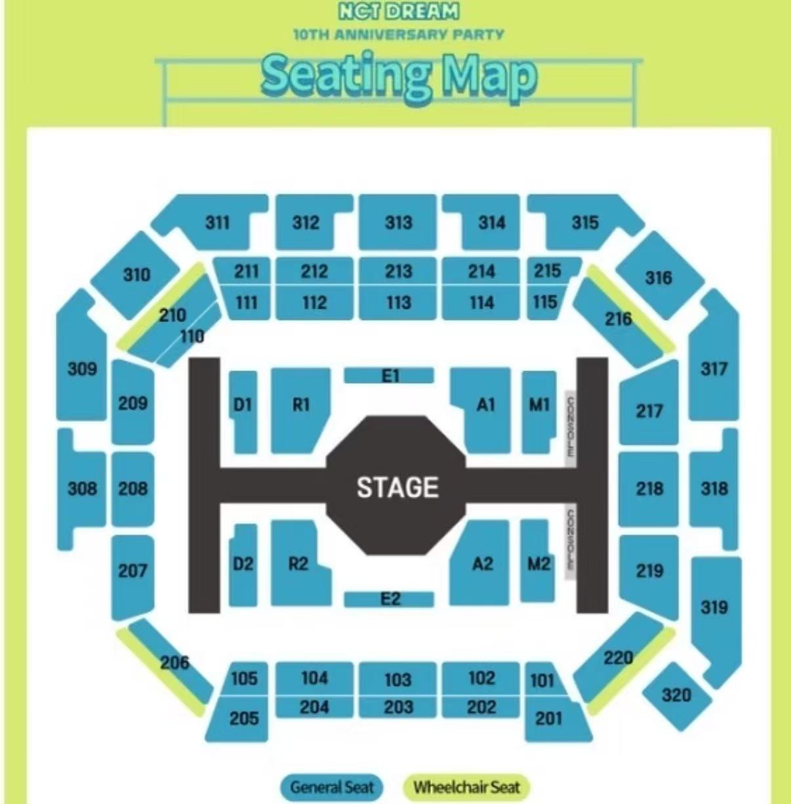

座位图热区测试流程预览
独立临时页：只模拟修改流程，不改正式系统代码。请重点测试 207 / 208 是否有手型、是否点到正确区域。
等待测试
前台座位图点击测试
客户视角下热区不可见，但鼠标移上去会变手，点击后只返回当前区域。
当前是客户视角：热区已隐藏。要检查覆盖范围，请点“显示全部热区”。

显示全部热区
客户视角测试
清空选中状态
还没有点击。这里会显示实际命中的 zoneId / zoneLabel。